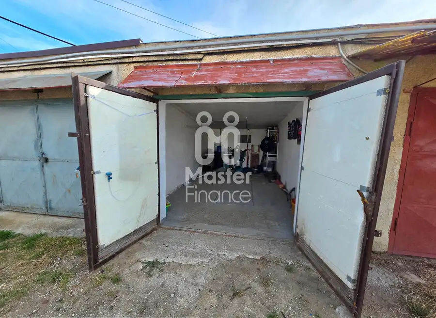
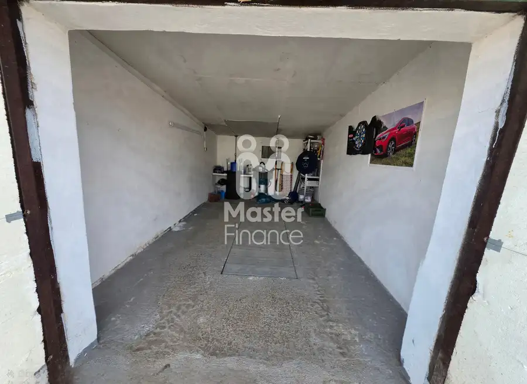
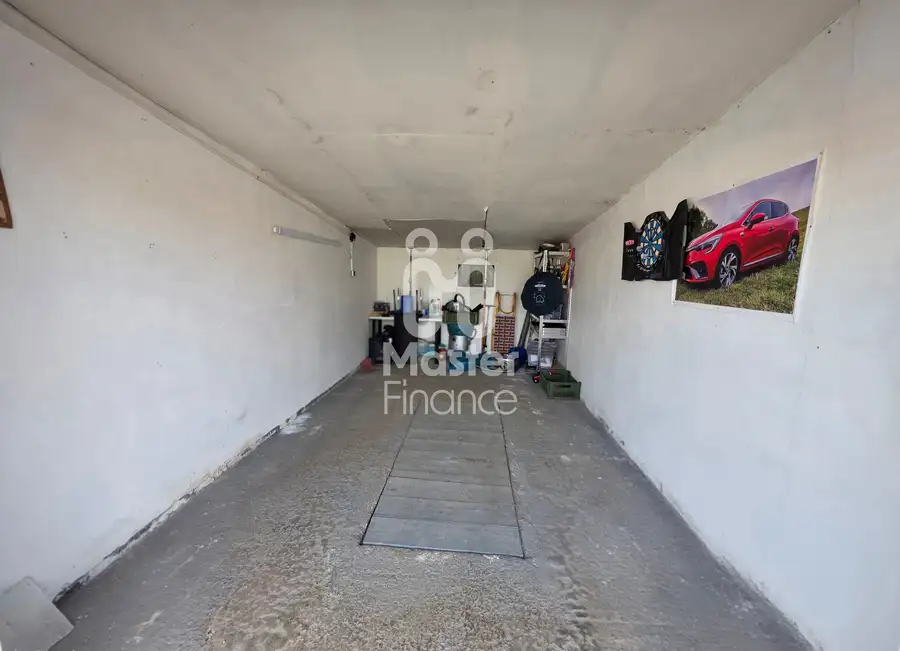
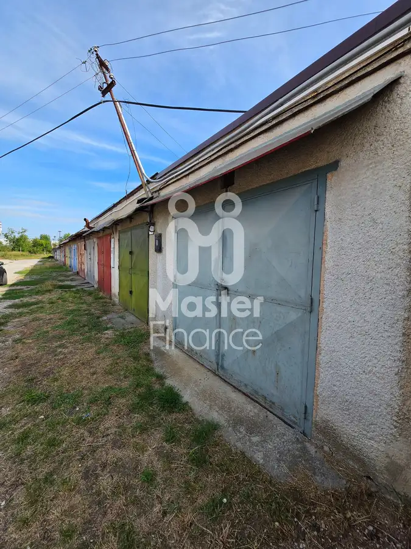
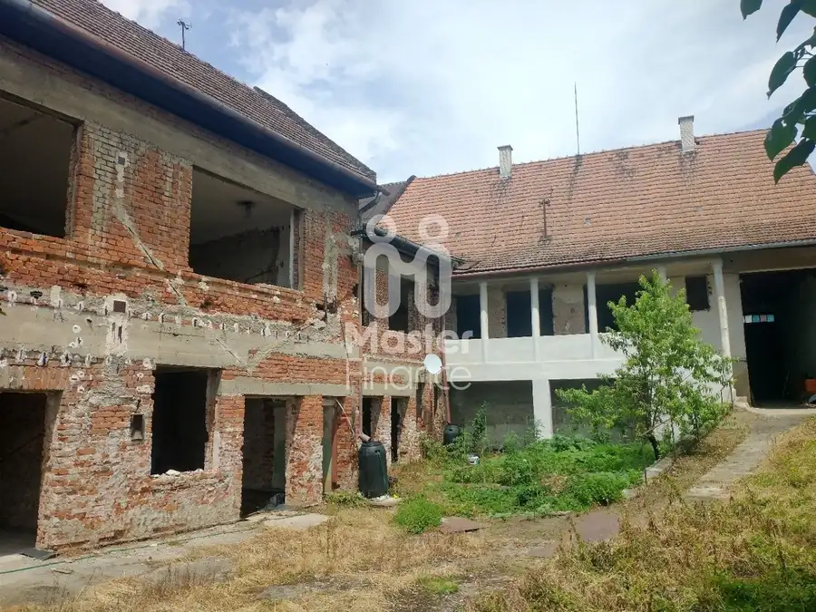
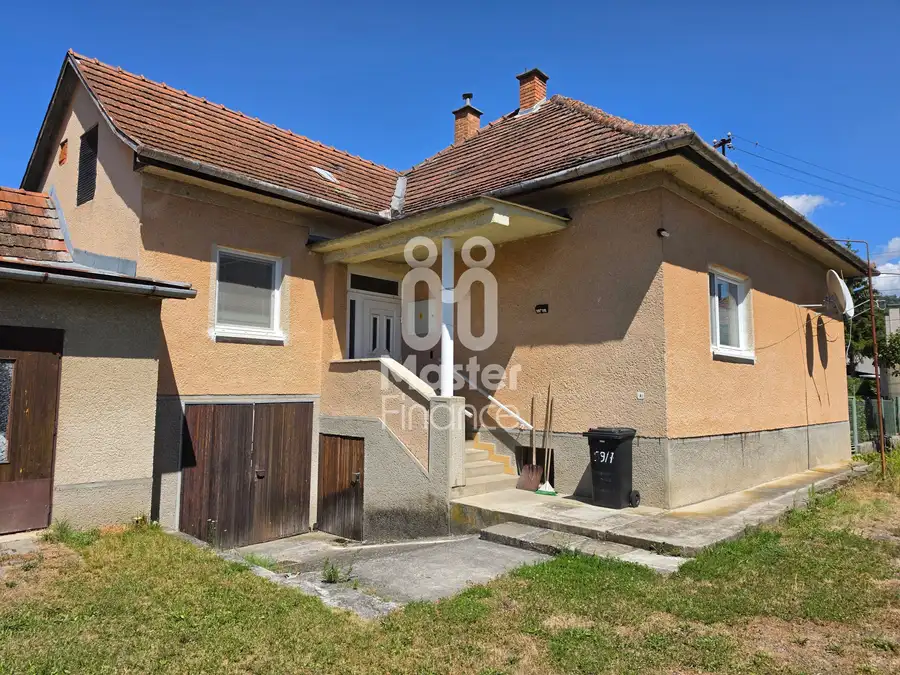
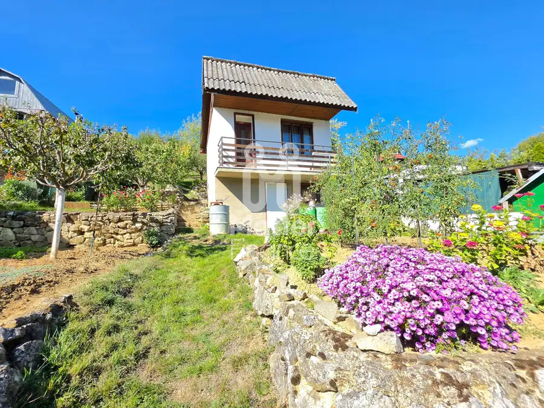

Predaj · Komerčné priestory
REZERVOVANE!!! Ponúkame na predaj garáž v Bánovciach nad Bebravou
Bánovce nad Bebravou
18 500 €925 € za m²




- Plocha20 m²
- StavPôvodný stav
O nehnuteľnosti
Ponúkame na predaj garáž v Bánovciach nad Bebravou, nachádzajúcu sa za železničnou stanicou lokalita ,,Staré ihrisko. Garáž stojí v radovej zástavbe je murovaná s rozlohou cca.20m², Do garáže je privedená elektrina so samostatným elektromerom. V prípade záujmu o detailnejšie informácie alebo obhliadku nehnuteľnosti ma neváhajte kontaktovať:Jaroslav Kováčik č.t.0910299026 mail: jaroslavkovacik1@gmail.comV cene je zahrnutý kompletný právny servis, vypracovanie návrhu na vklad do katastra nehnuteľností a poradenstvo v oblasti hypotekárneho financovania a poistenia.
Parametre
- Druh
- Garáž
- Dátum zverejnenia
- 26. 08. 2026
- Elektrina
- Na pozemku - 230 V
- Energetický certifikát budovy
- nie je
- Odpadové vody
- Nedostupné
- Plyn
- Nedostupné
- Počet nadzemných podlaží
- 1
- Rok výstavby
- 1980
- Stav nehnuteľnosti
- Pôvodný stav
- Typ
- Predaj
- Typ konštrukcie
- Tehlová
- Voda
- Nedostupné
- Vykurovanie
- Nedostupné
- Zastavaná plocha
- 20 m²
- Úžitková plocha
- 20 m²
Kde to je


Ďalšie ponuky
Celá ponukaMohlo by Vás zaujímať

DomNové 329 000 €Ponúkame na predaj nehnuteľnosť v centre mesta Bánovce nad Bebravou. Bánovce nad Bebravou 700 m²
DomNové 169 000 €Na predaj rodinný dom v obci Uhrovec Uhrovec 100 m²
Záhradná chatkaNové 29 500 €Ponúkame na predaj záhradu s chatkou v záhradkárskej osade Bánovce nad Bebravou. Bánovce nad Bebravou 414 m²